1. 实验目的
掌握路由器的 IPv6 基础配置方法。
深入理解静态 IPv6 路由的基础配置，明晰 IPv6 数据报文的路由过程。
全面掌握 IPv6 Over IPv4 隧道技术的配置与实现，透彻领会其基本原理。
了解IPv6过渡技术的简单应用场景以及网络迁移的方法。
2. 实验任务
某企业设有一个总部及两个分支，总部与分支之间通过广域专线直接相连。在企业发展初期，网络中仅存在 IPv4 终端与服务器。为实现总部与分支、分支与分支之间的相互访问，网络中部署了静态路由。如今，两个分支出现了用于试点 IPv6 业务的终端，要求在不对网络进行大规模改动的前提下，迅速达成 IPv6 终端的互联互通。
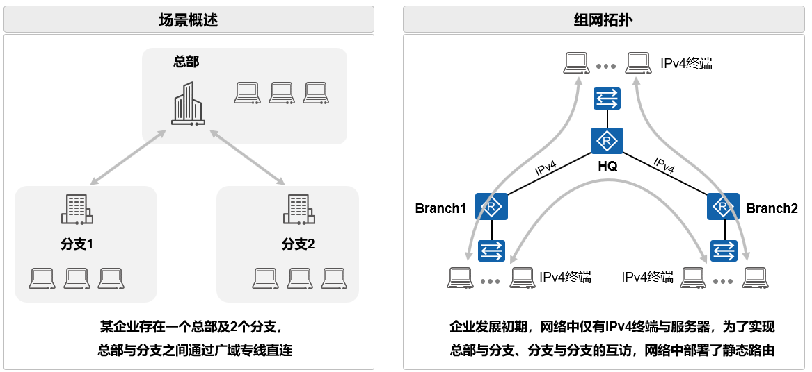
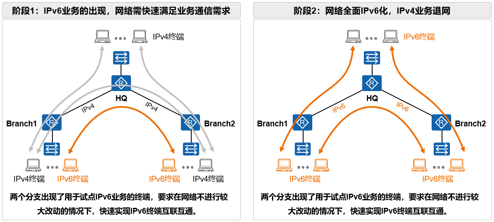
3. 实验原理
随着 IPv4 地址短缺问题的日益严峻，产业互联网的逐步升级，以及国家政策的大力推动，从 IPv4 网络向 IPv6 网络迁移已然成为当下各网络的重点工作。然而，出于业务延续性的考量，IPv4 网络仍将在相当长的一段时间内继续保留。在网络向 IPv6 演进的进程中，部署 IPv4 与 IPv6 地址共存的网络成为必然选择。
3.1. IPv6地址
IPv6 地址规范作为互联网协议第六版（IPv6）中用于唯一标识网络节点或接口的标准，其地址由 128 位构成，相较于 IPv4 的 32 位地址，提供了更为庞大的地址空间。
3.1.1. PA地址空间（Provider-Aggregatable address space）
PA 地址空间是指由区域互联网注册管理机构分配给互联网服务提供商（Internet Service Provider，ISP）的一段 IP 地址。ISP 可依据用户需求进一步分配地址块，即 PA 地址会随专线、Internet 专线等服务一同提供给用户。此方式适用于中小型企业，成本相对较低。但弊端在于，若更换 ISP，则需重新分配地址。
3.1.2. PI地址空间（Provider-Indepedent address space）
PI 地址空间是由区域互联网注册管理机构直接分配给最终用户的一段 IP 地址。获取此类地址的用户，必须另行联系 ISP 以获取互联网接入服务，并将到达相关地址段的路由在互联网上进行通告。
PI 地址与 ISP 相互独立，用户可接入多个 ISP，且地址能够自主规划，适用于大中型企业。不过，PI 地址的使用成本较高。
3.1.3. IPv6地址规划
在 IPv6 地址体系中，固定前缀和接口 ID 是两个关键组成部分。固定前缀用于标识特定的网络或子网，这些前缀由国际注册服务机构和互联网服务提供商（ISP）进行分配，并呈现出层次化结构。接口 ID 作为 IPv6 地址的另一部分，用于在网络中唯一标识特定的设备或接口。接口 ID 的长度通常为 64 位，其生成方式多样，包括手动配置、系统通过软件自动生成，或者按照 IEEE EUI - 64 规范生成。在多数情况下，接口 ID 由设备的 MAC 地址转换而来，以此确保其唯一性。
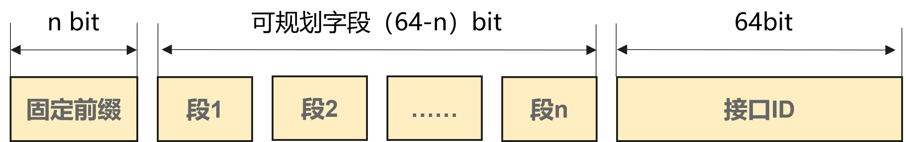
3.1.4. IPv6地址格式
IPv6 地址由 128 个二进制位组成。以 16 位为一个分组，共分成 8 组，每个 16 位分组用 4 个十六进制数表示，组与组之间用冒号分隔。其常见表示形式为：XXXX:XXXX:XXXX:XXXX:XXXX:XXXX:XXXX:XXXX，其中每个 “XXXX” 均代表一个 16 位的十六进制数。
在实际应用场景中，为简化地址的表示，IPv6 引入了一种压缩表示法。若地址中存在一连串的 0，这些 0 无需逐一显式表示，可统一用一个双冒号（::）替代。但需特别注意，在一个 IPv6 地址中，双冒号只能出现一次，以避免地址解析时产生歧义。
3.2. IPv6过渡技术
IPv6 过渡技术旨在实现 IPv6 网络区域（“小岛”）之间以及 IPv6 网络区域与 IPv4 网络（“海洋”）之间的相互通信。目前，主要存在三种主流的过渡技术：双协议栈技术、协议转换技术、隧道技术。这些过渡技术均致力于在 IPv4 与 IPv6 之间构建平稳的过渡路径，确保网络的连续性与稳定性。具体选用哪种技术，需依据实际网络环境和需求来确定。
3.2.1. 双协议栈技术
双协议栈技术是指在终端各类应用系统、运营支撑系统以及各网络节点中，同时运行 IPv4 和 IPv6 协议栈（两者基于相同的硬件平台），进而实现与 IPv4 或 IPv6 节点之间的信息交互。具备 IPv4/IPv6 双协议栈的节点被称为双栈节点，这类节点既能收发 IPv4 报文，也能收发 IPv6 报文。
IPv4/IPv6 在网络中并存且独立部署，对现有 IPv4 业务的影响较小。此演进方案简单易懂，网络规划设计的工作量相对较少。

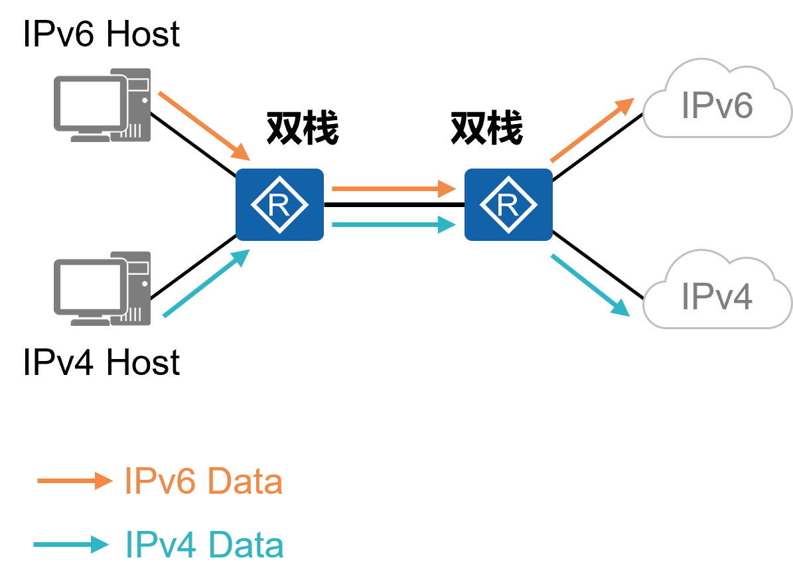
3.2.2. 协议转换技术
协议转换技术是一种有状态的网络地址与协议转换技术，典型代表如 NAT64。它通常仅支持由 IPv6 网络侧用户主动发起连接，以访问 IPv4 侧网络资源。不过，NAT64 也可通过手动配置静态映射关系，实现 IPv4 网络主动发起连接访问 IPv6 网络。
该技术适用于纯 IPv4 网络与纯 IPv6 网络之间的通信场景，需在网络中部署 NAT、DNS 等相关组件。

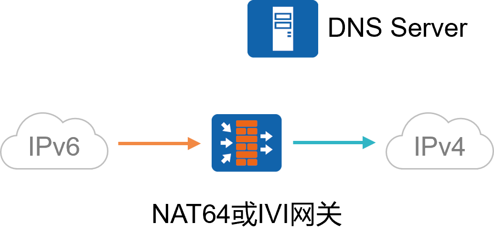
3.2.3. 隧道技术
隧道技术主要包含以下两种方式：
（1）IPv6 over IPv4隧道：将 IPv6 流量封装在 IPv4 隧道内，借此在 IPv4 网络中实现 IPv6 网络区域之间的互联互通。常见的实现方式包括手动隧道、自动隧道、6PE、6VPE、VXLAN 等。

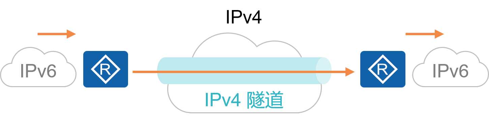
（2）IPv4 over IPv6隧道：将 IPv4 流量封装在 IPv6 隧道内，适用于在 IPv6 传输网络中达成 IPv4 网络区域之间的互通。例如手动隧道、SRv6 等。

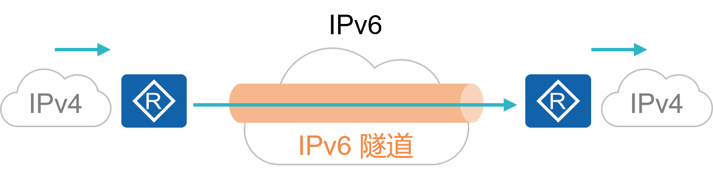
3.3. 隧道技术：IPv6 over IPv4隧道
本次实验主要运用 IPv6 over IPv4 隧道技术来完成，以下将对该技术展开详细介绍。
在 IPv6 over IPv4 隧道中，源 IPv4 地址必须手动配置，而目的 IPv4 地址的获取方式有手动配置和自动获取两种。根据隧道目的 IPv4 地址获取方式的差异，可将 IPv6 over IPv4 隧道分为手动隧道和自动隧道。本次实验仅涉及手动隧道，自动隧道方案的配置，同学们可自行通过网络查阅资料，本实验不再赘述。
3.3.1. IPv6 over IPv4手动隧道
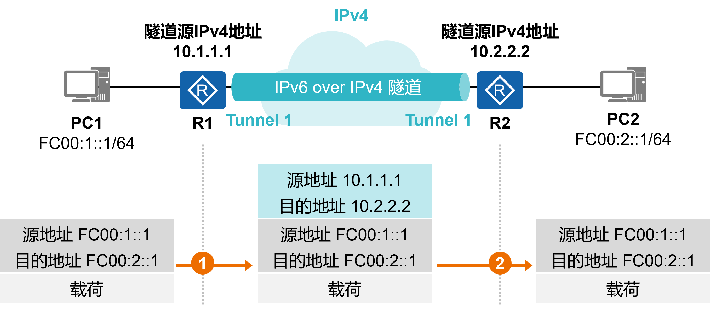
应用场景：适用于两个 IPv6 网络区域之间的点对点连接场景，且对数据密文传输无需求。
配置实现：要求隧道两端的网络设备支持双栈功能，并通过手动方式创建隧道。
方案特点：该技术成熟度高，实现过程相对简单。但缺点是需要手动配置，且仅支持点到点的连接方式。
4. 实验环境与分组
路由器2台，二层交换机2台，三层交换机1台，计算机3台，4人一组。
5. 实验组网
如下图，用户通过R1、R2及SW1构建了一个简单的路由器组网，其中R1和R2分别接入了一些终端，当前整个网络是纯IPv4的网络，但是设备都支持IPv6功能。
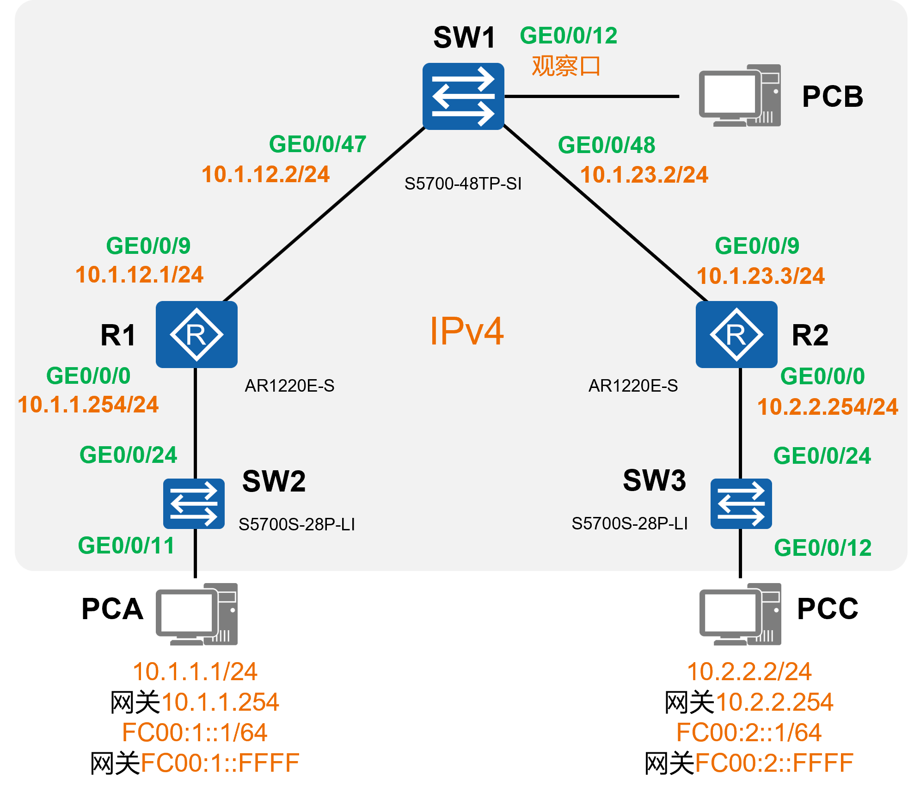
鉴于用户计划在 PCA 及 PCC 上部署软件应用，并期望通过 IPv6 实现应用信息的交互。因此，首先在 PCA 和 PCC 上启用双栈模式，即同时开启 IPv4 和 IPv6 功能，并分别配置相应的 IPv4 和 IPv6 地址。随后，用户期望 PCA 和 PCC 之间的 IPv4 和 IPv6 流量交互均能顺利进行。为快速达成 PCA 与 PCC 之间的 IPv6 通信，可在 R1 和 R2 之间构建一条 IPv6 Over IPv4 手工隧道。
IPv6 Over IPv4 手工隧道是由网络管理员手动在设备上创建的隧道。配置时，需在隧道两端的设备分别进行设置。该隧道能够使 IPv6 流量搭载在 IPv4 之上进行传输，具体做法是在 IPv6 报文的外层封装一个新的 IPv4 头部（即隧道头部），这样报文就能在 IPv4 网络中进行转发。对于中途的转发设备而言，它们仅依据外层的 IPv4 头部进行报文转发，而不会对内层的 IPv6 报文进行解析。
网络的演进状态如下：
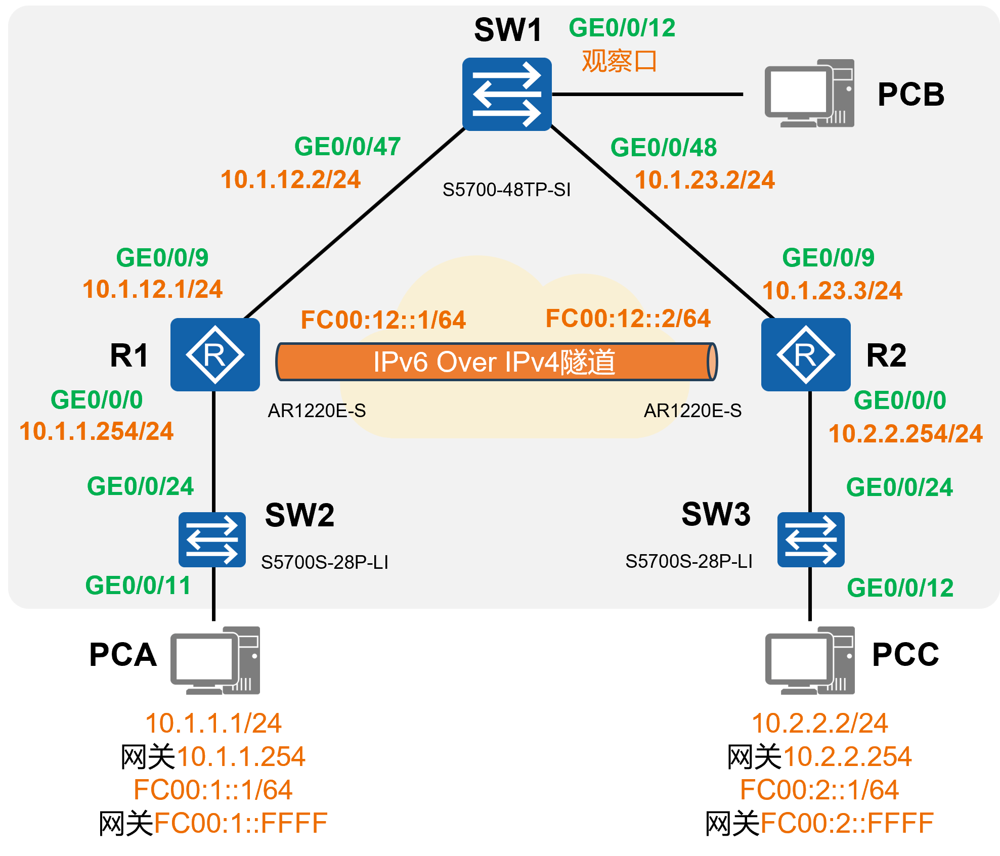
6. 实验思路
完成 R1、R2 及 SW1 的基础配置。
在 R1、R2 及 SW1 上进行配置，确保这三台设备之间能够实现 IPv4 通信。
在 R1、R2、SW1、PCA 及 PCC 上完成相关配置，使得 PCA 与 PCC 所在网段能够实现 IPv4 通信。
在 R1 与 R2 之间构建 IPv6 Over IPv4 隧道，使 PCA 与 PCC 的 IPv6 通信流量能够借助该隧道穿越 IPv4 网络。
7. 实验步骤
7.1. 登陆设备
7.1.1. Step1：
打开SecureCRT，点击窗口中的“快速连接”图标，如图所示：
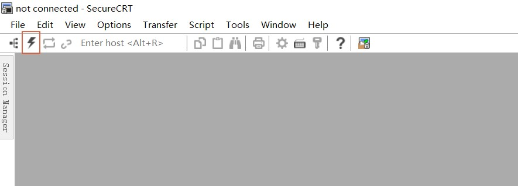
7.1.2. Step2：
在弹出的窗口中，输入需通过telnet访问的设备IP（见表 ATM管理机地址表 ）和端口号，然后点击“连接”即可。
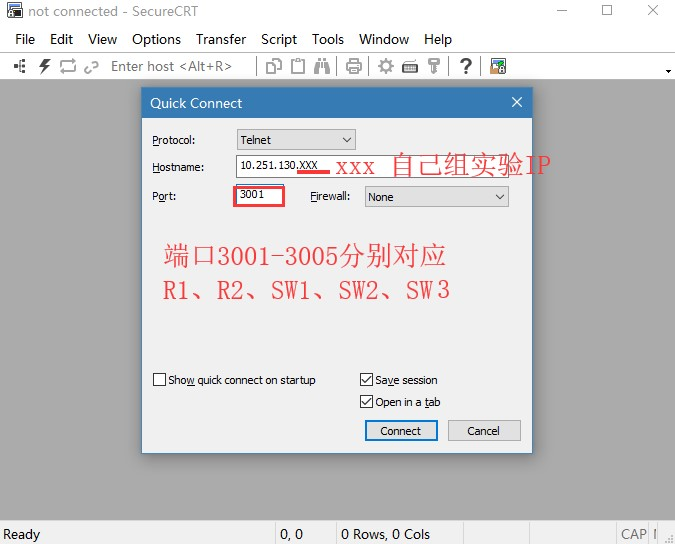
提示
交换机 不需要输入用户名和密码 。
路由器R1和R2的 用户名：admin，密码：Admin@huawei
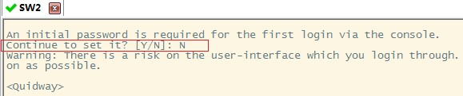
7.1.3. Step3：
登录成功后，即进入用户视图。在用户视图下，用户可以完成查看运行状态和统计信息等功能，此时屏幕上显示:

7.2. 清空配置
每次做实验前，先清空上一次的配置，本次实验需清空R1、R2、SW1、SW2、SW3的配置。
7.2.1. Step1：
在用户视图下，使用如下命令进行配置的清空
1reset saved-configuration //清除配置
2The device configurations will be erased to reconfigure. Are you sure?(y/n):y //输入y继续删除
3display saved-configuration //查看删除后的配置
查看删除后的配置：
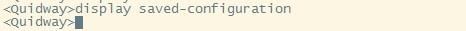
7.2.2. Step2：
在用户视图下，使用如下命令进行重启
1reboot //重启
2All the configuration will be saved to the next startup configuration. Continue? [y/n]:n //输入n不保存到启动配置
3System will reboot! Continue? [y/n]: //输入y，继续重新启动
4display current-configuration //重启后查看当前配置

7.3. 导入初始配置
R1导入下列配置
1 system-view
2 sysname R1
3 user-interface console 0
4 idle-timeout 60
5 quit
6 int G0/0/9
7 undo ip add
8 quit
9 int G0/0/8
10 shutdown
11 quit
12 quit
R2导入下列配置
1 system-view
2 sysname R2
3 user-interface console 0
4 idle-timeout 60
5 quit
6 int G0/0/9
7 undo ip add
8 quit
9 int G0/0/8
10 shutdown
11 quit
12 quit
SW1导入下列配置
1 system-view
2 sysname SW1
3 user-interface console 0
4 idle-timeout 60
5 quit
6 int range G0/0/1 to G0/0/4
7 shutdown
8 quit
9 observe-port 1 interface G0/0/12
10 interface G0/0/47
11 port-mirroring to observe-port 1 both
12 quit
13 quit
在 SW1 中，进行端口镜像配置旨在方便在 PCB 上捕获 R1 和 R2 之间的报文。observe - port 1 interface G0/0/12 命令将 G0/0/12 设置为观察口；interface G0/0/47 命令进入 G0/0/47 接口视图；port - mirroring to observe - port 1 both 命令把 G0/0/47 设置为 observe - port 1 的被观察口。如此，所有经过 SW1 的 G0/0/47 接口的流量，都会被复制到 G0/0/12 观察端口，从而可在 PCB 上观察到所有经过 SW1 的 G0/0/47 接口的报文，即 R1 和 R2 之间的报文。
备注
端口镜像
通常应用于网络监控、故障排查和安全审计等场景。通过将流量镜像到观察端口，管理员或安全设备能够实时查看和分析网络中的数据包，进而发现潜在问题或威胁。
SW2导入下列配置
1 system-view
2 sysname SW2
3 user-interface console 0
4 idle-timeout 60
5 quit
6 int range G0/0/1 to G0/0/4
7 shutdown
8 quit
9 quit
SW3导入下列配置
1 system-view
2 sysname SW3
3 user-interface console 0
4 idle-timeout 60
5 quit
6 int range G0/0/1 to G0/0/4
7 shutdown
8 quit
9 quit
导入信息步骤如下图所示： 复制以上的代码并分别粘贴入SW2、SW3。

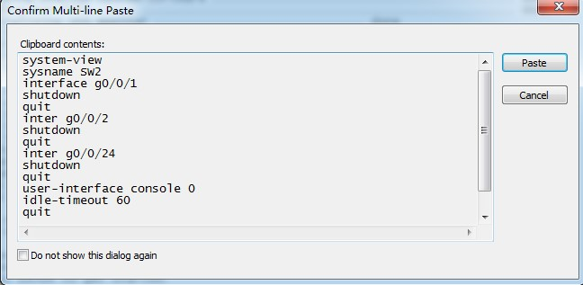
7.4. 完成R1、R2及SW1的接口IPv4地址配置
7.4.1. R1的配置
1system-view
2interface G0/0/9
3ip address 10.1.12.1 255.255.255.0
4quit
5interface G0/0/0
6undo portswitch //把G0/0/0默认的二层接口转为三层接口
7ip address 10.1.1.254 255.255.255.0
8quit
7.4.2. R2的配置
1system-view
2interface G0/0/9
3ip address 10.1.23.3 255.255.255.0
4quit
5interface G0/0/0
6undo portswitch //把G0/0/0默认的二层接口转为三层接口
7ip address 10.2.2.254 255.255.255.0
8quit
7.4.3. SW1的配置
1system-view
2vlan batch 10 11 //创建vlan 10和vlan 11
3interface G0/0/47
4port link-type access
5port default vlan 10
6quit
7interface G0/0/48
8port link-type access
9port default vlan 11
10quit
11
12interface Vlanif 10
13ip address 10.1.12.2 255.255.255.0
14quit
15
16interface Vlanif 11
17ip address 10.1.23.2 255.255.255.0
18quit
在 SW1 交换机上，配置了两个 Access 接口（G0/0/47 和 G0/0/48），分别连接到 VLAN 10 和 VLAN 11，并为这两个 VLAN 的接口分配了 IP 地址。
7.5. 在R1、R2及SW1上完成配置，使得这三台设备之间能够相互通信
7.5.1. 测试R1和R2的连通性
完成上述配置后，R1 与 SW1、SW1 与 R2 能够相互通信。以 R1 和 SW1 为例，对于设备间的直接链路，当在 R1 设备上配置 G0/0/9 的 IPv4 地址后，设备会自动在其路由器中生成到达该接口所在网段的直连路由，因此它可直接通过直连路由到达 SW1，无需人工干预路由信息。
备注
在SW1三层交换机上配置了两个VLAN，为什么不同VLAN也能ping通呢？
这是因为 SW1 是三层交换机，除具备传统二层交换机的功能外，还拥有路由功能。这意味着它能够处理 IP 数据包，并依据路由表决定数据包的转发路径。当交换机收到 VLAN10 的计算机发送的数据帧后，会根据目标地址和路由表来确定数据包的转发方向。若目标地址在 VLA11 的网段内，三层交换机会将数据包路由到 VLAN11，从而实现 VLAN 间的通信。
然而，此时 R1 无法与 R2 相互访问。可在 R1 上执行如下命令：
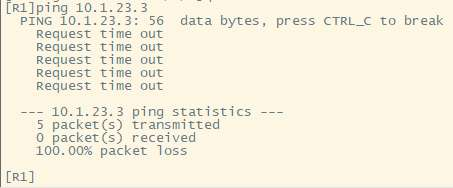
从上述输出可知，R1 无法 ping 通 R2。出现这种现象的原因是 R1 的路由表中没有到达 R2 的路由信息。
请使用 display ip routing - table 查看 R1 和 R2 的路由表。
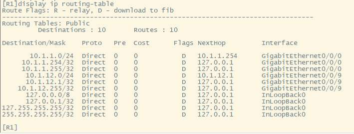
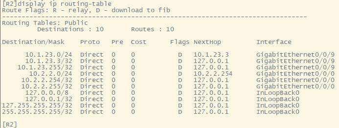
7.5.2. 添加R1、R2静态路由
现在为R1配置到达10.1.23.3的路由。
1ip route-static 10.1.23.0 24 10.1.12.2
ip route-static 10.1.23.0 24 10.1.12.2 是一条静态路由配置命令。当路由器需要发送数据包到10.1.23.0/24这个网络时，它应该将数据包发送到10.1.12.2这个地址。下面是对这条命令各部分的解释：
ip route-static：这是命令的关键字，用于添加静态路由条目。
10.1.23.0：这是目的网络的IP地址。
24：这是子网掩码的长度，表示子网掩码为255.255.255.0。
10.1.12.2：这是下一跳地址，也就是数据包应该被发送到的下一个路由器的IP地址，用于到达目的网络10.1.23.0/24。
再在R1上查看IPv4路由表：
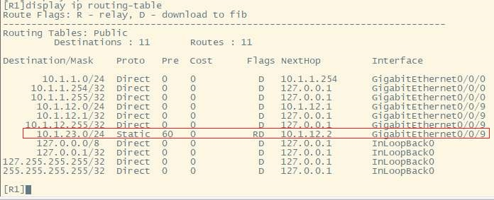
R1的路由表中已成功添加到达10.1.23.0/24的路由，那么，此时R1是否已经能够ping通R2呢？
经测试会发现，R1 依然无法 ping 通 R2。这是因为应用程序触发的数据交互过程通常是双向的，有去必有回。此时 R1 发往 R2 的报文能够到达下一跳 SW1，而 SW1 又可根据直连路由将报文转发给 R2，但 R2 的应答报文却无法到达 R1，原因是 R2 此时并无到达 R1 的路由。
在R2上添加路由：
1ip route-static 10.1.12.0 24 10.1.23.2
此时，请自行测试是否能在R1 ping通R2？
7.6. 在R1、SW1、R2、PCA及PCC上完成配置，使得PCA与PCC所在网段能够相互通信
7.6.1. 配置PCA和PCC的IP
备注
实验室电脑配备两个有线网卡，我们需配置的是第二块网卡，即 “以太网 2”。由于一台电脑只能有一个默认网关，因此需要删掉 “以太网” 的默认网关，方可配置 “以太网 2” 的默认网关。注意，仅删掉 “以太网” 的默认网关，其他设置请勿改动！！！
PCA的配置如下：
IP：10.1.1.1/24 网关：10.1.1.254
PCC的配置如下：
IP：10.2.2.2/24 网关：10.2.2.254
在PCA上去ping PCC会发现无法ping通。
分析原因可知，当 PC1 ping PC2 时，PC1 发出的 ICMP Echo Reply 报文的源 IPv4 地址是 PCA 的地址 10.1.1.254，目的地址是 PCC 的地址 10.2.2.2。该报文从 PCA 发送给其缺省网关 10.1.1.254，即 R1，然而 R1 并无到达目的网段的路由，因此该报文被丢弃。
注意
为了让PCA与PCC能够相互通信，我们需要：
让R1知道如何达到10.2.2.0/24网段；
让SW1知道如何达到10.1.1.0/24网段和10.2.2.0/24网段；
让R2知道如何达到10.1.1.0/24网段。
请同学们在R1、SW1及R2上自行完成上面3个配置要求，使得PCA与PCC能够相互通信。可参考上述静态路由的配置方法：）
完成上述配置后，在PCA ping PCC：
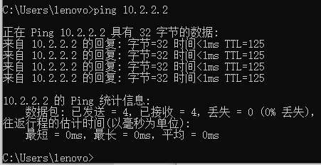
7.7. 在R1和R2之间构建IPv6 Over IPv4隧道
我们在前述步骤中所做的配置不仅仅使得PCA与PCC能够进行IPv4通信，三台网络设备之间亦实现了基于IPv4的相互通信，这为本步骤提供了基础。
鉴于用户将在 PCA 与 PCC 上启用 IPv6 并期望通过网络进行通信，而当前由 R1、SW1 及 R2 构成的网络是纯 IPv4 网络，无法直接转发 IPv6 流量，因此需部署 IPv6 过渡技术。在本实验中，我们将采用 IPv6 Over IPv4 隧道技术，在 R1 与 R2 之间构建一条此类隧道。如此，PC 发给 R1 或 R2 的 IPv6 流量到达 R1 或 R2 后，会被封装到该隧道中，在 IPv6 流量外层添加一个 IPv4 的外层头部，并转发给 SW1，再由 SW1 转发到对端路由器。
7.7.1. R1的配置
1[R1]IPv6
2interface Tunnel0/0/0 //创建隧道
3tunnel-protocol ipv6-ipv4 //指定为IPv6 Over IPv4类型
4source 10.1.12.1 //隧道的源地址
5destination 10.1.23.3 ////隧道的目的地址
6ipv6 enable //激活IPv6
7ipv6 address FC00:12::1 64 //隧道接口的IPv6地址
8quit
在上述配置过程中，我们首先在 R1 设备上全局开启 IPv6 功能。接着，通过 interface Tunnel0/0/0 命令创建了一个编号为 0/0/0 的隧道（Tunnel）接口，随后进入该接口的配置视图。在这个配置视图里，通过 tunnel-protocol ipv6-ipv4 命令明确该隧道接口的类型为 IPv6 Over IPv4 类型。source 10.1.12.1 和 destination 10.1.23.3 这两条命令分别指定了隧道的源地址和目的地址，这两个地址代表着隧道的两个端点。由于当前网络中已经部署了静态路由，所以这两个 IPv4 地址之间是可以相互访问的。另外，ipv6 enable 命令的作用是激活隧道接口的 IPv6 功能，而 ipv6 address FC00:12::1 64 命令则是为该隧道接口配置了一个 IPv6 地址。经过这样的配置后，对于 R1 设备而言，它会认为自身新增了一个逻辑接口，这个接口具备 IPv6 地址，并且其对端设备就是 R2。
7.7.2. R2的配置
R2 需要进行与 R1 类似的配置，具体如下：
1[R2]IPv6
2interface Tunnel0/0/0
3tunnel-protocol ipv6-ipv4
4source 10.1.23.3
5destination 10.1.12.1
6ipv6 enable
7ipv6 address FC00:12::2 64
8quit
当完成上述 R1 和 R2 的配置后，我们可以在 R1 设备上对 R2 的 Tunnel0/0/0 接口地址进行 ping 测试，测试情况如图所示：
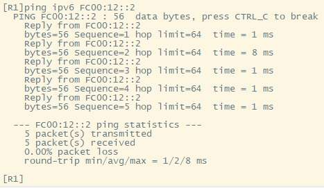
7.8. 实现PCA与PCC的IPv6通信
目前，R1 与 R2 之间的 IPv6 Over IPv4 隧道已经成功建立。接下来，为了实现 PCA 与 PCC 之间的 IPv6 通信，我们需要先对 R1 的 G0/0/0 接口和 R2 的 G0/0/0 接口进行 IPv6 配置，这两个接口将分别作为 PCA 和 PCC 的 IPv6 网关。此外，以 PCA 向 PCC 发送流量为例，PCA 会先把流量发送给其网关 R1，R1 则需要将接收到的 IPv6 流量引入到它与 R2 之间的 IPv6 Over IPv4 隧道中。我们将通过配置静态路由的方式来引导流量，把这些流量导向 Tunnel0/0/0 接口，这样流量就能通过隧道到达 SW1，再由 SW1 对数据进行封装后转发给 PCC。
7.8.1. R1的配置
1interface G0/0/0
2ipv6 enable
3ipv6 address FC00:1::FFFF 64
4quit
5
6ipv6 route-static FC00:2:: 64 Tunnel 0/0/0
在上述配置里，ipv6 route-static FC00:2:: 64 Tunnel 0/0/0 命令的作用是配置一条 IPv6 静态路由。这条路由的目的网段是 FC00:2::/64，也就是 PCC 所在的网段，而到达该网段的出接口是 Tunnel 0/0/0。当从 PCA 发往 PCC 的流量到达 R1 后，R1 会在其 IPv6 路由表中查找目的 IPv6 地址 FC00:2::1，找到匹配的路由后，发现出接口为 Tunnel 0/0/0 接口。由于该接口是 IPv6 Over IPv4 类型，其隧道源地址为 10.1.12.1，隧道目的地址为 10.1.23.3，所以 R1 会将 IPv6 报文进行 IPv4 封装，在 IPv4 报文头部写入相应的源地址和目的地址，然后将封装后的报文转发给 SW1，最后由 SW1 把报文转发到目的地 R2。
7.8.2. R2的配置
注意
R2 的配置与 R1 大体相似，不过要留意 IPv6 地址和网段的变化。 请同学们自行完成 R2 的隧道配置。
7.8.3. PCA和PCC增加IPv6地址
在PCA上配置IPv6地址：FC00:1::1/64，网关：FC00:1::FFFF
在PCC上配置IPv6地址：FC00:2::1/64，网关：FC00:2::FFFF
现在，从 PCA 对 PCC 进行 ping 测试，结果如图所示：
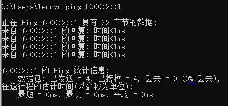
从测试结果可以看出，PCA 与 PCC 之间的 IPv6 通信已经恢复正常。此时，当在 PCA 上对 PCC 进行 ping 测试时，我们可以在 PCB 上捕获到 R1 发往 R2 的 ICMPv6 报文，具体情况如图所示：
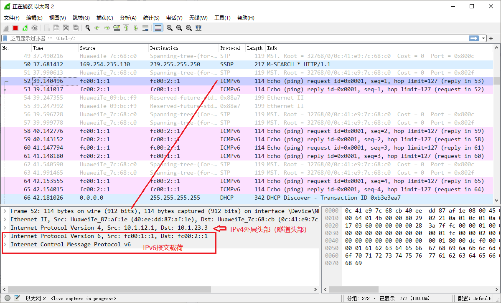
注意
选做：网络全面IPv6化（IPv6 Only），IPv4业务退网
要求：将分支互联网络过渡到 IPv6 网络环境，部署 IPv6 静态路由，实现 R1、SW1、R2 这三个站点之间的 IPv6 互联互通，同时取消 IPv4 路由协议的使用，并删除 IPv6 Over IPv4 隧道。
完成上述配置后，从 PCA 对 PCC（FC00:2::1）进行 ping 测试，并捕获和分析 ICMPv6 报文。